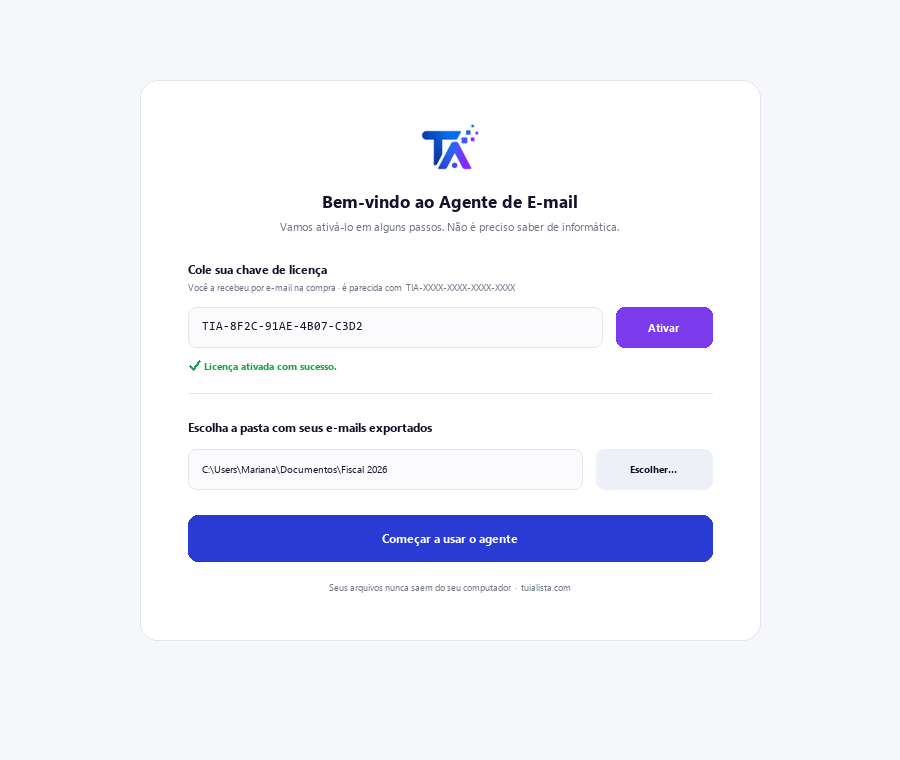
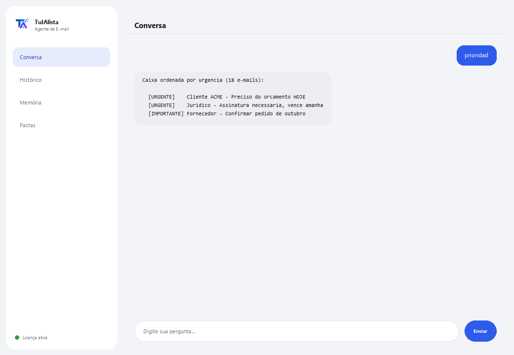

Agente de E-mail
Organiza sua caixa de entrada, diz o que é urgente e redige respostas — processando tudo no seu computador.
O que resolve e o que você precisa?
O e-mail é um dos maiores consumidores de tempo do dia: dezenas de mensagens onde o urgente se mistura com o ruído. Este agente transforma essa caixa caótica em uma lista de ações clara — priorizada, com tarefas extraídas e rascunhos prontos.
- Você precisa: sua chave de licença (TIA-XXXX-XXXX-XXXX-XXXX) e a pasta com seus e-mails exportados (.eml, .mbox, .txt ou .csv). Nada de Python nem conhecimento técnico.
- Primeiro resultado em menos de 5 minutos: instala, ativa, escolhe sua pasta e roda prioridad para ver sua caixa ordenada por urgência.
- Seus e-mails nunca saem do seu computador — a análise roda localmente.
soporte@tuialista.com ou acesse tuialista.com/soporte — normalmente respondemos no mesmo dia útil.1 O que este agente faz
Você aponta para a pasta com seus e-mails exportados e ele:
- Lê todos (.eml, .mbox, .txt e .csv), sem conexão com servidores de e-mail.
- Prioriza cada mensagem: urgente, importante, normal ou baixa.
- Extrai as tarefas que pedem de você, quem pede e para quando.
- Detecta pendências provavelmente sem resposta.
- Redige rascunhos de resposta profissionais no idioma do e-mail.
- Agrupa por remetente e busca dentro dos seus e-mails.
- Responde suas perguntas sobre a caixa: “o que me pediram com prazo esta semana?”
O resultado: você para de perder tempo na caixa e age primeiro no que realmente importa.
2 Instalação (2 minutos)
Para Windows. Não precisa de internet o tempo todo nem enviar nada para a nuvem.
Baixe o instalador em tuialista.com/descargar (agente E-mail) e abra-o. Ele cria um atalho na sua área de trabalho com o logo — não precisa de Python nem terminal.
Dê duplo clique no novo ícone. Cole sua chave de licença (você a recebeu por e-mail na compra) e clique em Ativar. Você verá um check verde quando for válida.
Selecione a pasta com seus e-mails exportados e clique em Começar a usar o agente. Na próxima vez ele abre direto — lembra sua chave e sua pasta.

3 Como usar
O agente abre uma janela de chat, como um app de mensagens — não é uma tela preta de programador. Você escreve seu comando ou pergunta na caixa de texto abaixo, clica em Enviar (ou Enter), e a resposta aparece como uma mensagem, igual nesta imagem real:

Os comandos a seguir são as palavras que você pode escrever nessa mesma caixa de texto:
> prioridadSua caixa ordenada por urgência: URGENTE, IMPORTANTE, NORMAL, BAIXA. Marca os que têm prazo.
> resumenPanorama executivo da caixa: quantos urgentes/importantes, remetentes mais frequentes e o que atender primeiro.
> tareasE-mails que pedem uma ação, quem pede, a prioridade e o prazo mencionado se houver.
> responder <assunto>Rascunho de resposta ao e-mail que você indicar (por assunto ou número), no idioma do original, com espaços [ENTRE COLCHETES] para completar.
> pendientesE-mails que pedem ação e cujo remetente não aparece como destinatário de outro e-mail seu — possivelmente sem resposta.
> remitentesAgrupa seus e-mails por remetente, ordenado por volume.
> buscar <texto>Busca uma palavra ou frase no assunto e no corpo. Ex.: buscar fatura marco.
> pergunta livre?Escreva qualquer dúvida em linguagem natural, ex.: quais e-mails urgentes eu tenho desta semana?
> sairEncerra a sessão (exit também funciona).
4 Exemplos de uso comum
Começar o dia pelo urgente
prioridad — você vê primeiro o URGENTE e o que tem prazo.
Não esquecer o que pediram
tareas
Responder rápido e bem
responder proposta de projeto — você recebe um rascunho profissional pronto para revisar e enviar.
Detectar o que ficou sem resposta
pendientes
5 Perguntas frequentes
Meus e-mails são enviados para a internet?
Ele se conecta à minha conta do Gmail/Outlook?
Preciso de internet para usar?
Como ele decide a prioridade?
Em que idioma ele redige as respostas?
Como ele detecta “pendências sem resposta”?
Posso mudar a pasta de e-mails?
Ele lê arquivos anexos (PDF, Word)?
Ele modifica ou envia e-mails?
Ele guarda histórico entre sessões?
6 Solução de problemas
Mostra “0 e-mails”
Um .csv não é lido corretamente
Diz “Licença inválida” ou pede para reconectar
“Nenhum provedor de IA configurado”
Nenhuma dessas soluções resolveu seu problema? Escreva para nós diretamente — teremos prazer em revisar com você.
soporte@tuialista.com ou acesse tuialista.com/soporte — normalmente respondemos no mesmo dia útil.7 Privacidade e confidencialidade
Seus e-mails nunca saem do seu computador.
- O agente lê e processa os arquivos localmente, no seu próprio computador. Não se conecta ao seu servidor de e-mail nem envia seus e-mails para lugar nenhum.
- A priorização, a detecção de tarefas e o agrupamento por remetente acontecem no seu computador.
- A única coisa que trafega pela internet é: (1) uma verificação de que sua licença está ativa — que não inclui o conteúdo dos seus e-mails —, e (2) ao pedir um resumo, um rascunho ou uma pergunta, um fragmento dos e-mails relevantes é enviado ao motor de IA para redigir a resposta.